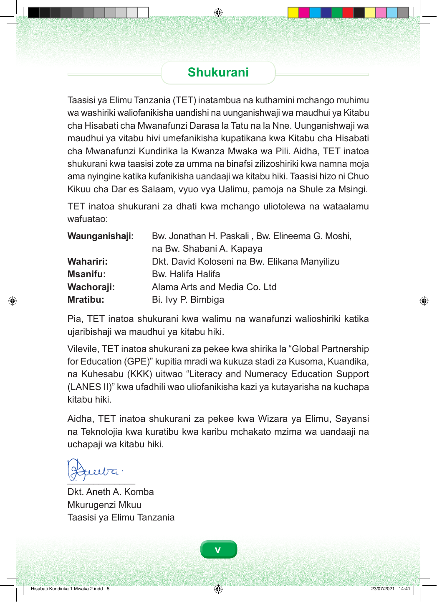

Shukurani Taasisi ya Elimu Tanzania (TET) inatambua na kuthamini mchango muhimu wa washiriki waliofanikisha uandishi na uunganishwaji wa maudhui ya Kitabu cha Hisabati cha Mwanafunzi Darasa la Tatu na la Nne. Uunganishwaji wa maudhui ya vitabu hivi umefanikisha kupatikana kwa Kitabu cha Hisabati cha Mwanafunzi Kundirika la Kwanza Mwaka wa Pili. Aidha, TET inatoa shukurani kwa taasisi zote za umma na binafsi zilizoshiriki kwa namna moja ama nyingine katika kufanikisha uandaaji wa kitabu hiki. Taasisi hizo ni Chuo Kikuu cha Dar es Salaam, vyuo vya Ualimu, pamoja na Shule za Msingi. TET inatoa shukurani za dhati kwa mchango uliotolewa na wataalamu wafuatao: Waunganishaji: Bw. Jonathan H. Paskali , Bw. Elineema G. Moshi, na Bw. Shabani A. Kapaya Wahariri: Dkt. David Koloseni na Bw. Elikana Manyilizu Msanifu: Bw. Halifa Halifa Wachoraji: Alama Arts and Media Co. Ltd Mratibu: Bi. Ivy P. Bimbiga Pia, TET inatoa shukurani kwa walimu na wanafunzi walioshiriki katika ujaribishaji wa maudhui ya kitabu hiki. Vilevile, TET inatoa shukurani za pekee kwa shirika la “Global Partnership for Education (GPE)†kupitia mradi wa kukuza stadi za Kusoma, Kuandika, na Kuhesabu (KKK) uitwao “Literacy and Numeracy Education Support (LANES II)†kwa ufadhili wao uliofanikisha kazi ya kutayarisha na kuchapa kitabu hiki. Aidha, TET inatoa shukurani za pekee kwa Wizara ya Elimu, Sayansi na Teknolojia kwa kuratibu kwa karibu mchakato mzima wa uandaaji na uchapaji wa kitabu hiki. _____________ Dkt. Aneth A. Komba Mkurugenzi Mkuu Taasisi ya Elimu Tanzania v Hisabati Kundirika 1 Mwaka 2.indd 5 23/07/2021 14:41